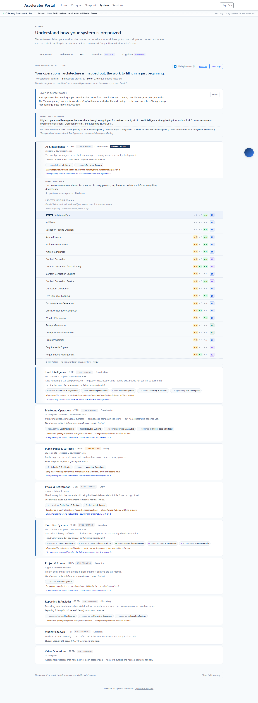
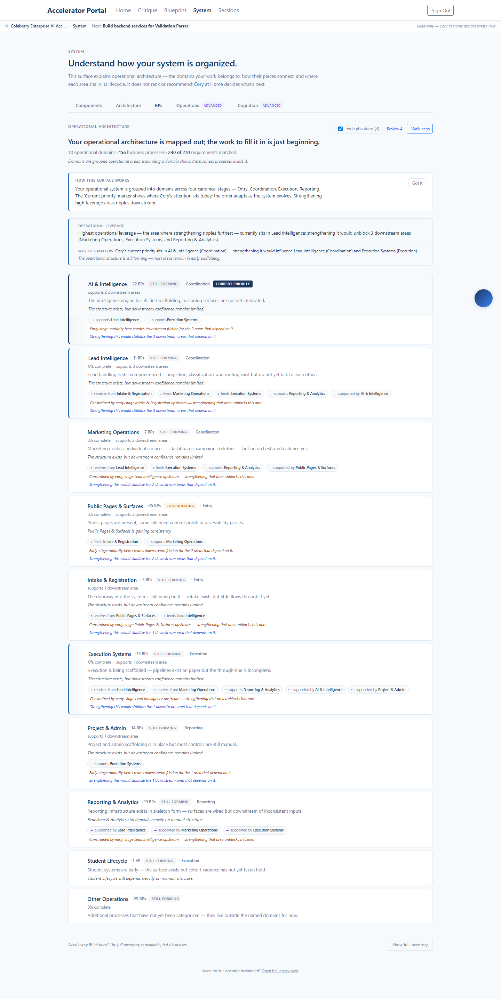
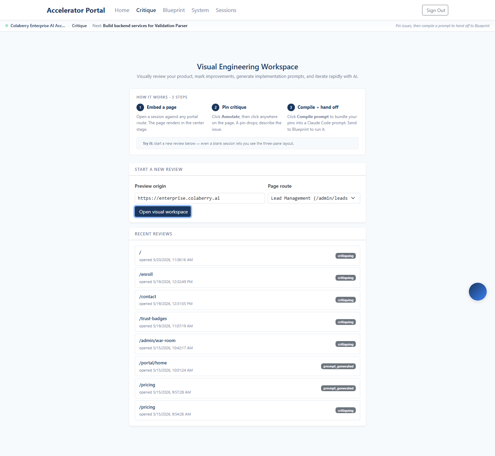

Expected: Domain stack with CURRENT PRIORITY badge on AI & Intelligence; hide-phantoms toggle visible in header.

Expected: "Sorted by priority · current next-action pinned to top" hint above rows. Validation Parser at top with NEXT chip + 4px primary-blue left border + blue tint background.

✓ URL retains bp + route params: yes (handoff fixed)
Expected: Visual workspace renders with the picker pre-filled to /admin/leads. This is exactly the URL that BPDetailV2's "Critique this page" button now navigates to.
